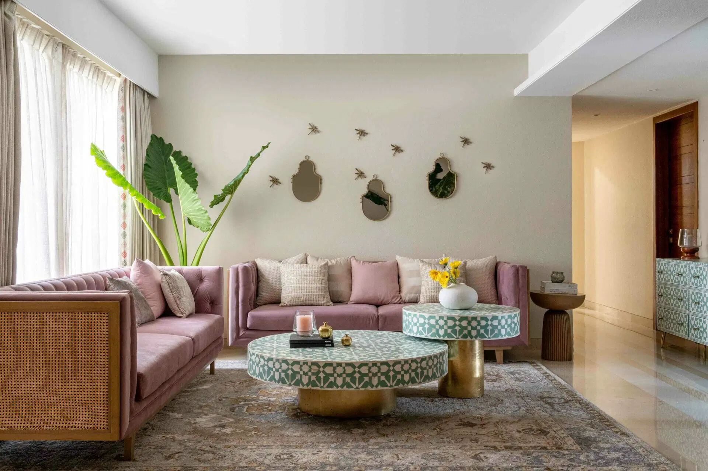
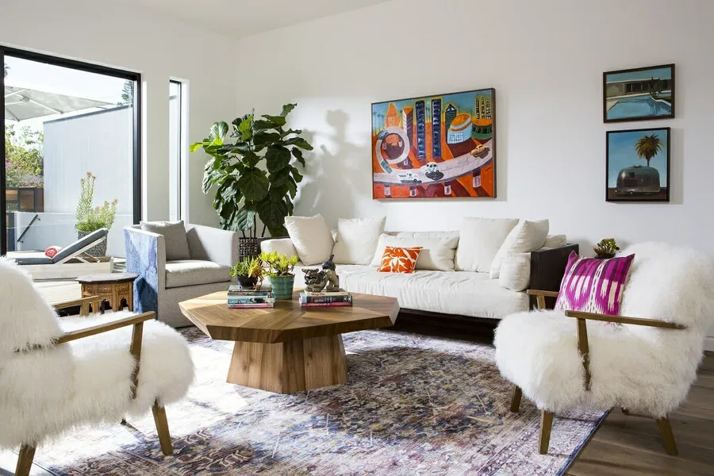

Корисні поради: створюємо ідеальний інтер’єр
Планування інтер'єру – це справжнє мистецтво, яке потребує уваги до деталей. Нижче ми поділимося кількома порадами, які допоможуть вам зробити простір стильним, комфортним і гармонійним.
1. Як правильно вибрати кольорову гаму?
Обирайте кольори, які вам подобаються і створюють комфортну атмосферу. Використовуйте правило "60-30-10":
- 60% – основний колір
- 30% – додатковий колір
- 10% – акцентний колір
Це допоможе створити гармонійний вигляд кімнати.
2. Вибір меблів та зонування
Ретельно обирайте меблі, що відповідають розміру вашого простору. Використовуйте зонування для створення функціональних зон: робоча зона, відпочинок, їдальня тощо.
3. Використовуйте освітлення для створення настрою
Світло – це ключовий елемент будь-якого інтер’єру. Використовуйте різні типи освітлення (загальне, точкове, акцентне), щоб зробити простір більш затишним і функціональним.
| Ідея | Корисні ресурси | Додаткові поради |
|---|---|---|
|  | Embracing Natural Materials: The Trend Transforming Interior Design | Обирайте натуральні матеріали для створення затишної атмосфери. |
 |
12 Indoor Plants for a Happy—and Healthy—Home | Додавайте зелені рослини для природного акценту. |
|  | Top 10 Accent Chair Living Room Ideas to Transform Your Space | Використовуйте акцентні кольори для створення яскравих деталей. |
Цікаві матеріали та елементи декору
- Натуральне дерево
- Ідеальний матеріал для створення тепла та затишку в приміщенні. Рекомендується використовувати для підлоги, меблів або декору.
- Шпалери з текстурою
- Текстуровані шпалери додають об’єму та глибини стінам. Вибирайте природні відтінки для створення спокійної атмосфери.
- Металеві акценти
- Мідь, латунь або чорний метал чудово підходять для сучасних або індустріальних інтер’єрів, додаючи стильних деталей.
- Рослини
- Зелені рослини не тільки освіжають інтер’єр, але й створюють природну гармонію в просторі. Використовуйте їх для акцентів.
- Текстиль
- Килими, подушки та штори допомагають створити затишок. Обирайте текстиль у світлих або пастельних відтінках для легкості.
Корисні поради для облаштування кімнати
| Поради для облаштування кімнати | ||
|---|---|---|
| Елемент | Рекомендація | Деталі |
| Меблі | Вибирайте модульні меблі | Гнучкі для перепланування |
| Ставте меблі біля стін | Максимізуйте простір | |
| Освітлення | Використовуйте декілька рівнів освітлення для зонування простору | |
| Декор | Обирайте натуральні матеріали | Додають затишок і гармонію |
Кольори в інтер’єрі: поєднання та готові комбінації
Правильне поєднання кольорів допомагає створити гармонійну атмосферу в будь-якому просторі. Дізнайтеся, які кольори пасують один до одного та які готові схеми дизайну використовують професіонали.
Примітка: Якщо фрейм не відображається, перегляньте статтю за цим посиланням.